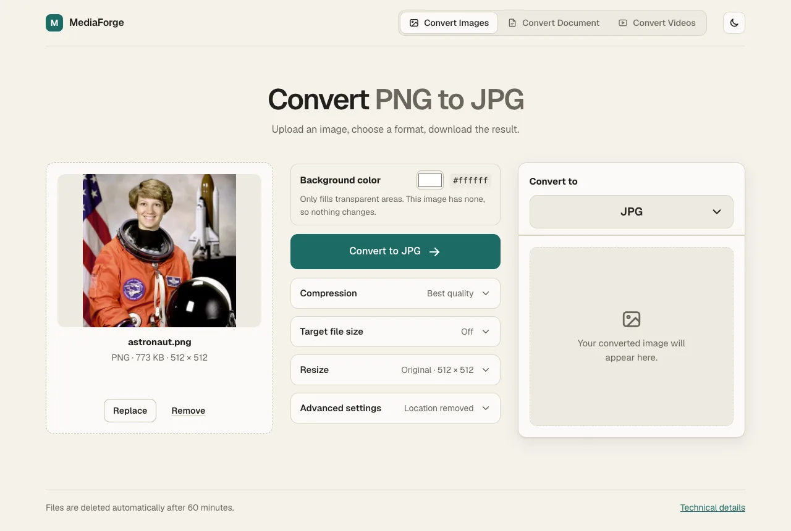
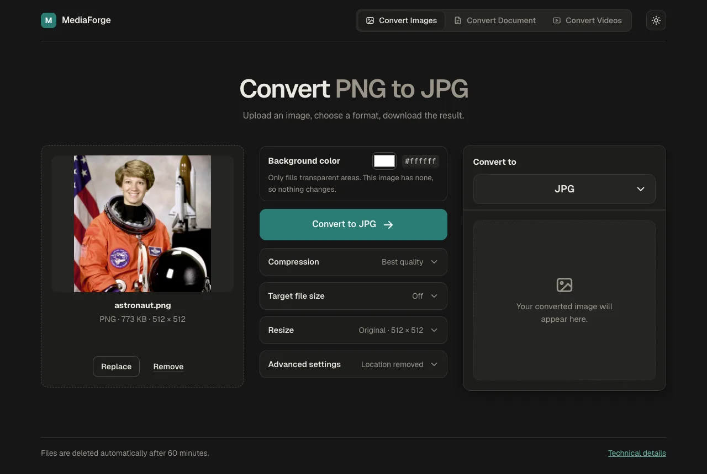
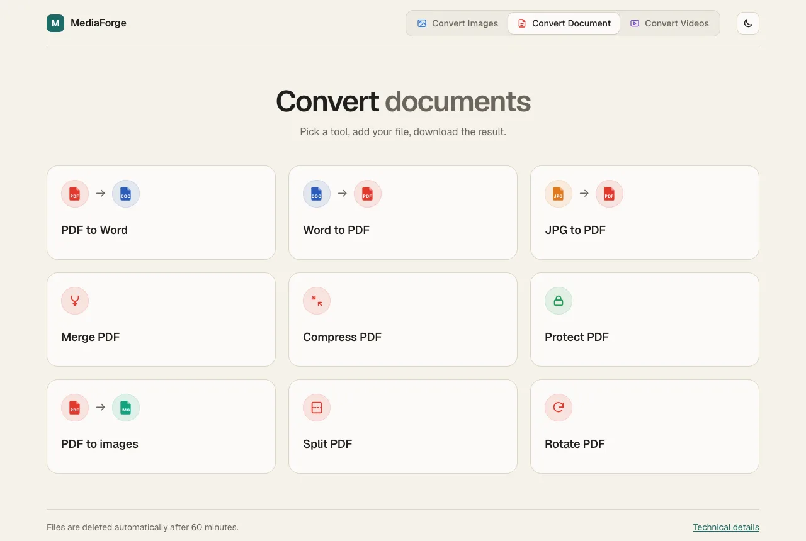
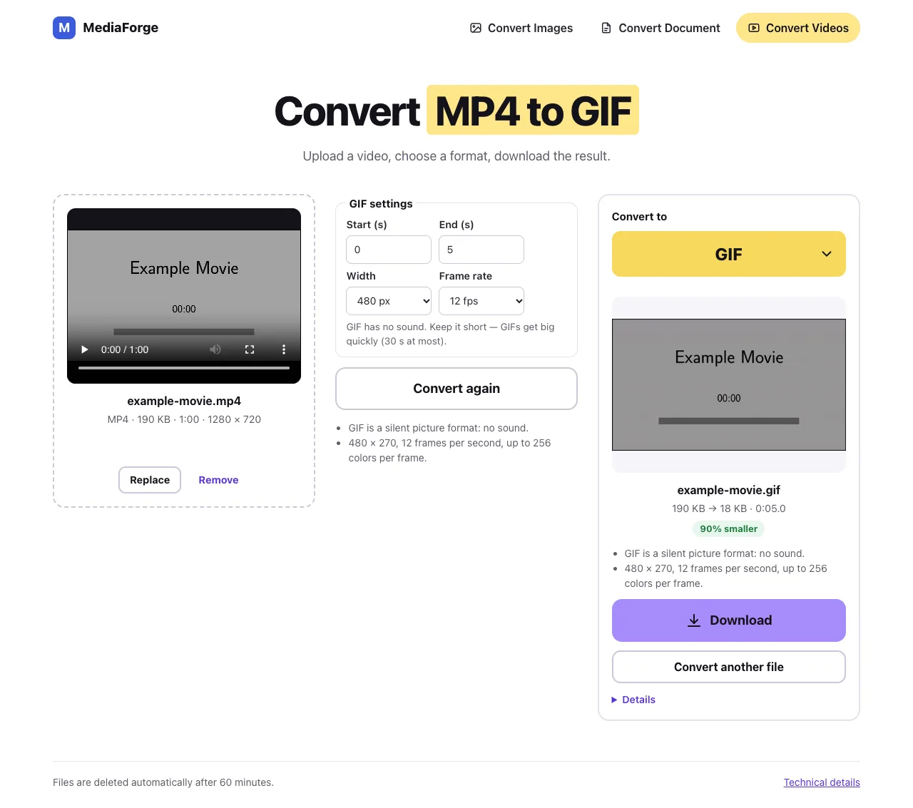

Convert anything. Right on your computer.
Turn photos, videos and documents into the format you need — compress them, cut out backgrounds, merge PDFs. Your files never leave your computer.


One app for images, documents and videos
Drop a file, choose what you want, download the result. MediaForge checks every file it makes before handing it to you.
Convert images
JPG, PNG, WebP, AVIF, GIF, TIFF, iPhone HEIC photos and more.
- Remove the background with one tick (AI, on your computer)
- Make files smaller, or aim for a size like “under 200 KB”
- Resize, fill transparent areas, strip location data
Convert documents
Nine PDF and Word tools in one place.
- PDF to Word, Word to PDF, JPG to PDF, PDF to images
- Merge, split, rotate and compress PDFs
- Protect a PDF with a password
Convert videos
MP4, MOV, MKV, WebM, AVI and five more formats.
- Reduce file size with simple quality levels
- Turn a clip into a GIF — or a GIF into an MP4
- See progress, cancel any time, keep HDR or convert it
Your files stay yours
Most online converters upload your photos and documents to someone else’s server. MediaForge does all the work on your own computer.
Private by design
Nothing is uploaded. Location data is removed from photos by default.
Checked results
Every file is reopened and verified before you download it.
Works offline
No internet needed after installing. No waiting in an online queue.
Free, no account
No sign-up, no subscription, no watermarks. Light and dark mode included.
Four steps, every time
The same simple flow on every tab.
- Add your fileDrag it in, or click “Choose”. Files up to 500 MB.
- Pick the formatChoose what you want it to become. Extra options stay tucked away until you need them.
- ConvertClick the button. Videos show progress and can be cancelled.
- DownloadSee the result and how much smaller it got, then save it.


Up and running in a minute
MediaForge isn’t sold through the App Store or Microsoft Store, so the first time you open it your computer asks you to confirm. That’s expected.
Mac
- Download MediaForge-mac-x64.dmg and open it.
- Drag MediaForge into your Applications folder.
- The first time only: right-click MediaForge → Open → Open. (Or System Settings → Privacy & Security → Open Anyway.)
- The first start takes about 3 minutes while it tests what it can convert. After that it opens in seconds.
Works on Intel and Apple Silicon Macs (Apple Silicon runs it through Rosetta, which macOS installs for you).
Download for MacWindows
- Download MediaForge-windows-x64-Setup.exe and run it.
- If a blue “Windows protected your PC” box appears: click More info → Run anyway.
- MediaForge installs and opens. You’ll find it on your desktop and in the Start menu.
- The first start takes a few minutes while it tests what it can convert.
Needs 64-bit Windows 10 or 11 and about 1 GB of free space.
Download for WindowsGood to know
Are my files uploaded anywhere?
No. MediaForge runs a small conversion engine on your own computer and only talks to itself. Converted files are deleted from its working folder automatically after 60 minutes.
Why is the download so big?
It includes everything it needs so you don’t have to install anything else: the video engine (FFmpeg), the background-removal AI model and the document tools.
How good is background removal?
It works best on one clear subject — a person, a product, a pet. Busy scenes or several subjects may need a touch-up. It takes a few seconds per photo.
Will PDF to Word keep my layout?
It keeps the text so you can edit it, but not the exact layout, columns or pictures. Scanned PDFs (photos of paper) can’t be read yet. Word to PDF keeps text, headings, lists, tables and pictures; the page layout may differ slightly from Word.
Is it really free?
Yes — no account, no subscription, no watermark. MediaForge uses open-source components such as FFmpeg (GPL), which are credited inside the app.
Ready to convert?
Free for Mac and Windows. Private by design.